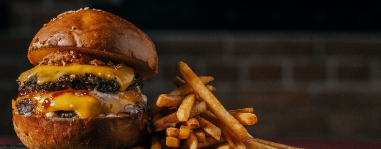
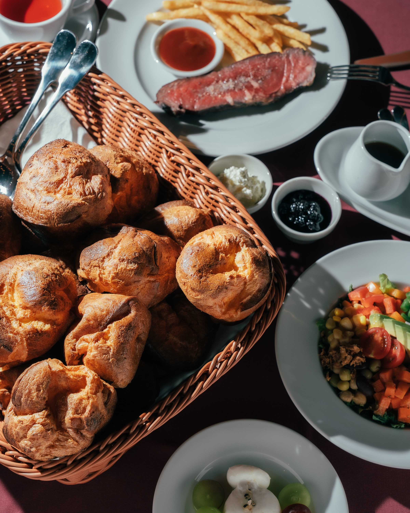
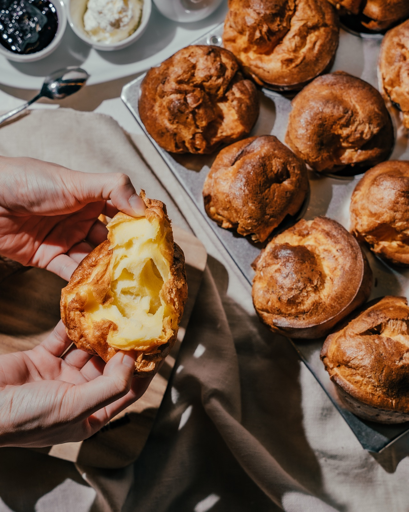
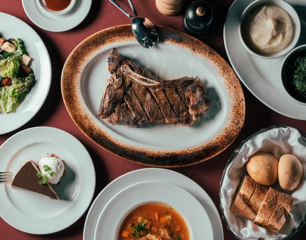
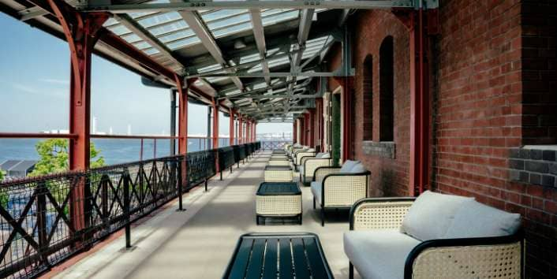
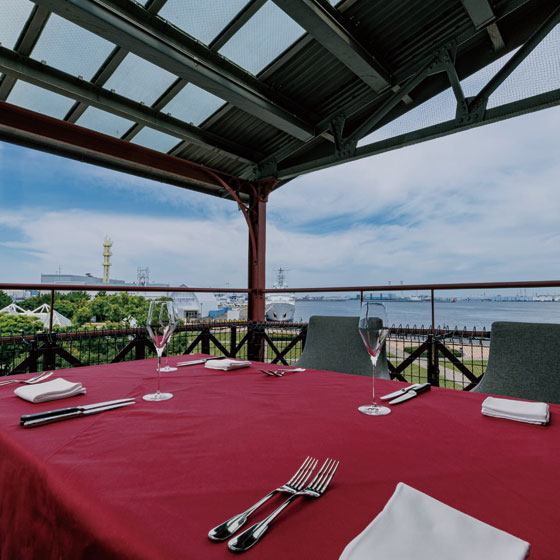
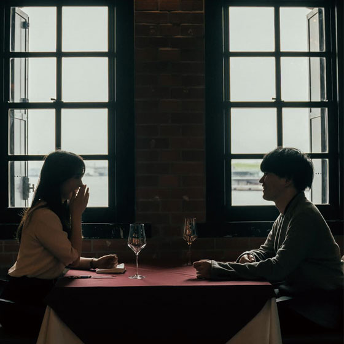

Re : Wharfハンバーガー＋フリードリンク付き
¥4,500
120gの黒毛和牛100%パティを2枚。ステーキと同じロースターで焼き上げ、ブリオッシュのバンズと、赤ワインと赤ワインビネガーを煮詰めた特製ソースで仕上げた、ランチ限定のハンバーガーです。
- 内容
- Re : Wharfハンバーガー、フライドポテト、フリードリンク（ソフトドリンクとハイボール。ラストオーダーは90分）
- ご利用条件
- 最大滞在時間はご予約のお時間から2時間です。
横浜赤レンガ倉庫
2号館 3階

NYスタイルのステーキ＆シーフードレストラン Re : Wharf のランチタイム。名物のポップオーバーはおかわり自由。ハンバーガーやLボーンステーキのランチコースもご用意しています。
平日限定 The Popover Selection Lunch Set
¥3,000税込・サービス料10%別／1日40食
ランチ 11:00〜15:00（L.O. 14:30）
Popover
焼きたてのポップオーバーに、旬の食材を合わせた特製プレート。お食事としても、少し贅沢なブランチとしてもお楽しみいただける、平日限定のランチセットです。

ご予約で埋まりやすいセットです。お早めのご予約をおすすめします。
Lunch
ディナータイムよりもリーズナブルに、Re : Wharf の肉料理と横浜のロケーションを楽しめるのがランチタイムです。
| The Popover Selection Lunch Set平日限定、1日40食 | ¥3,000 |
|---|---|
| Re : Wharfハンバーガー＋フリードリンク付き | ¥4,500 |
| 極上Lボーンランチコース毎日ご提供・2名様より | ¥8,500 |
価格はお一人様、税込です。別途サービス料10%を頂戴します。

¥4,500
120gの黒毛和牛100%パティを2枚。ステーキと同じロースターで焼き上げ、ブリオッシュのバンズと、赤ワインと赤ワインビネガーを煮詰めた特製ソースで仕上げた、ランチ限定のハンバーガーです。

¥8,500
USプライムビーフのLボーンステーキを、ランチタイム限定の特別価格で。ステーキハウスらしい一皿を、コースでゆっくりお楽しみいただけます。
「お席のみ」でご予約のうえ、当日お選びください。
| ビーフステーキライスサラダ、1ドリンク付。ガーリック抜きも承ります | ¥2,900 |
|---|---|
| ウィークエンドランチコース土・日・祝日限定。クラシックシーザーサラダ、本日のスープ、パン、本日の魚料理または肉料理、本日のデザート、コーヒーまたは紅茶 | ¥5,000 |
公式ランチメニューに記載の価格です。お会計の際、サービス料10%を加算します。
公式ランチメニュー（PDF）を見る
Voices
焼きたてのポップオーバーは外カリカリ中モチモチでとっても美味しかったです。付け合わせのソース（塩バターホイップ、ブルーベリーソース、メープルシロップ）がどれも相性が良く、飽きずにたくさん食べられました！
平日ランチ限定のポップオーバーセットは、焼き立て＆おかわり自由で満足感たっぷり。ミートプレートやベジボウル（またはスープ）も付いて、ボリューム・内容ともに大満足でした。歴史ある空間でゆったり過ごせ、女子会やデートにもおすすめです。
お友達やカップル、おひとりの方など様々なかんじでしたが、雰囲気も素敵でゆっくりできます。……もっと沢山食べたかったけど、意外とお腹がいっぱいになりました。……ちょっと贅沢なランチにオススメです
Google マップに投稿された口コミから一部を抜粋しています（2026年10月時点、省略箇所は……で示しています）。
Location
テラス席では、心地よい海風のなかで、みなとみらいの景色を眺めながらお食事いただけます。店内は約150席。赤レンガ倉庫のレンガを活かしたメインダイニングのほか、窓際の席や個室もご用意しています。



Scene
テーブル席は2名様から最大8名様まで。お子様連れも歓迎です。お子様メニューのご用意はありませんが、可能な限り対応します。
窓際の席や、海風のテラス席で。メッセージプレート（有料）は、ご予約時にお申し込みいただけます。
ドレスコードはなく、おひとりでもご利用いただけます。クロークでお召し物やバッグをお預かりします。ご予約なしでもご来店いただけますが、状況によりお待ちいただく場合があります。
Access
FAQ
The Popover Selection Lunch Set は平日（月〜金）限定、1日40食のご用意です。
はい。極上Lボーンランチコースは毎日のランチタイムにご注文いただけます（2名様より）。当日お選びいただくウィークエンドランチコース（¥5,000）は土・日・祝日限定です。
ご予約なしでもご来店いただけますが、状況によりお待ちいただく場合があります。お電話かオンラインでのご予約をおすすめします。The Popover Selection Lunch Set をご希望の場合は、予約ページで同名のプランをお選びください。
ランチは11:00〜15:00、ラストオーダーは14:30です。
テラス席を確約できるプランを、極上Lボーンランチコース（2名様限定）などでご用意しています。天候によりテラス席をご利用いただけない場合があります。
サービス料として、お会計の10%を頂戴します。
はい、ご利用いただけます。お子様メニューのご用意はありませんが、可能な限り対応します。大人と同じ内容のコースを召し上がる場合は、大人の人数としてご予約ください。
はい、ご利用いただけます。
ドレスコードはございません。
ご利用いただけます。ご予約時にお知らせください。
はい。ご予約の際にお申し付けください。
店内は全席禁煙です。
Reservation
Webでは24時間ご予約を受け付けています。
＊アレルギー等で召し上がれない食材がございましたら、ご予約の際にお伝えください。
＊営業時間中はお電話が繋がりにくい場合があります。オンライン予約がおすすめです。